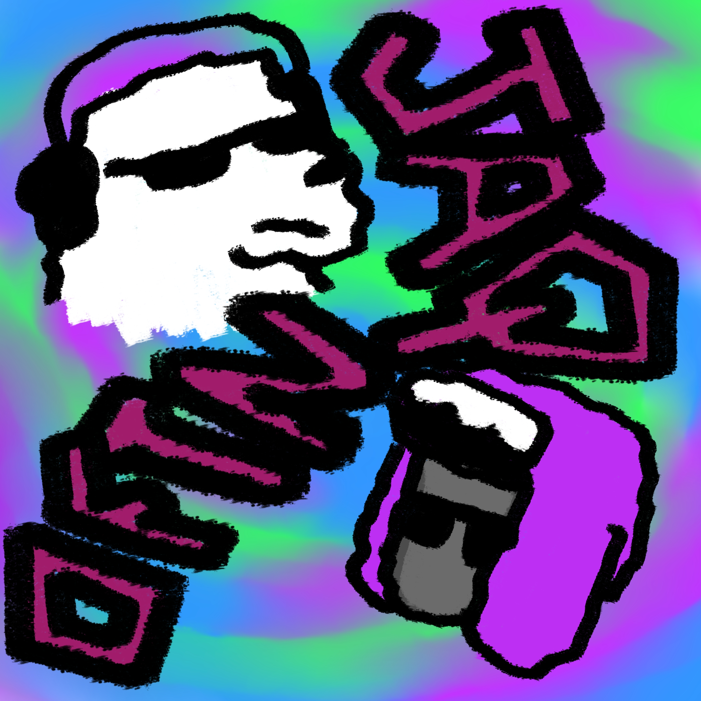
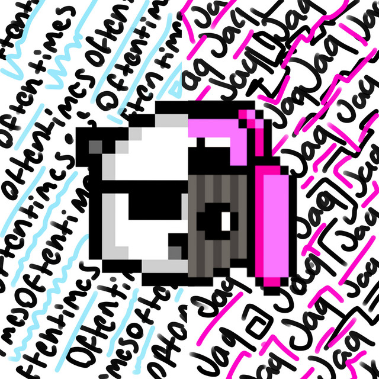
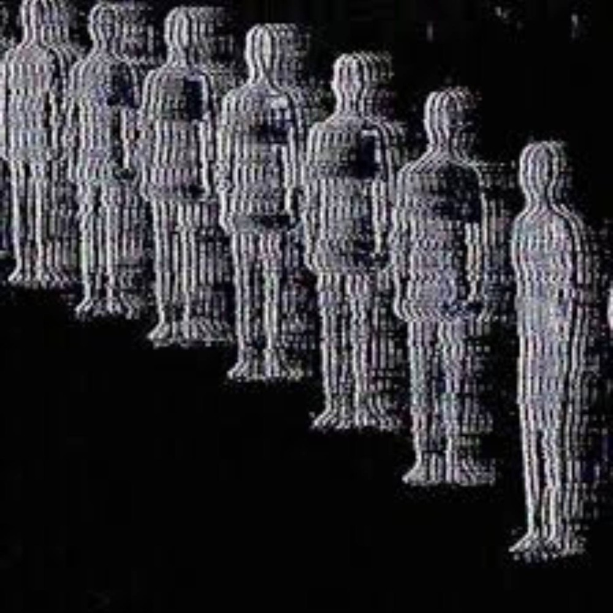
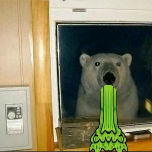
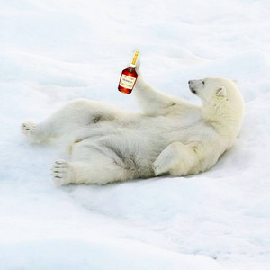
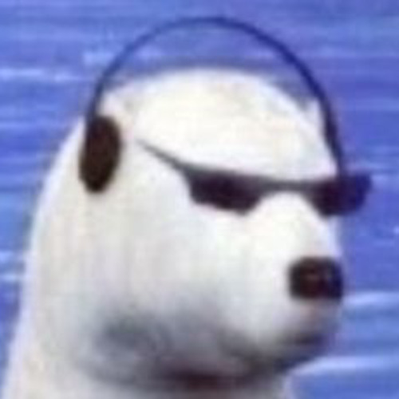
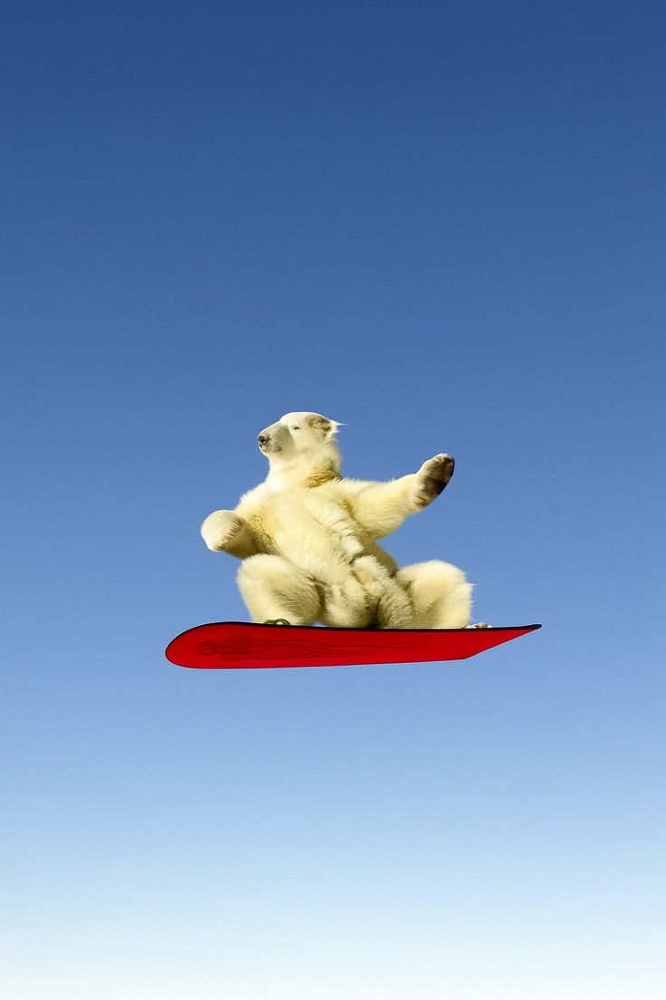

Jaquarious Indie
is a Minneapolis-based indie rock artist building a raw, internet-native catalog across streaming platforms. The sound sits near indiecore, rock, and lo-fi song sketches: direct, rough-edged, and made to feel discovered at midnight.

LATEST RELEASE
i think
"new single, May 23, 2026"






some other songs
LTN
hurl
give me a chance
Curb.
i think
witch
instead
Awesome
I know
hide and seek
Behind the Music
Jaquarious Indie is an indie rock artist associated with Minneapolis. Jaq's music appears on many plaatforms like Apple Music, Audiomack, SoundCloud, Shazam, and other streaming platforms, with releases documented from mid to late 2025 through 2026.
Jaq chooses to keep most infromation related to him private and is mostly represented through streaming profiles, individual track listings, genre tags, and cover artwork rather than a formal biography, label profile, or published touring history.
top ten songs
Last updated 5/26/26:
01 LTN
02 give me a chance
03 all the time
04 instead
05 i'm a wannabe
06 witch
07 hurl
08 its not the same anymore
09 I know
10 Awesome
where to find them
Spotify
Apple Music
Audiomack
SoundCloud
Shazam
YouTube
TikTok
iTunes
Amazon Music